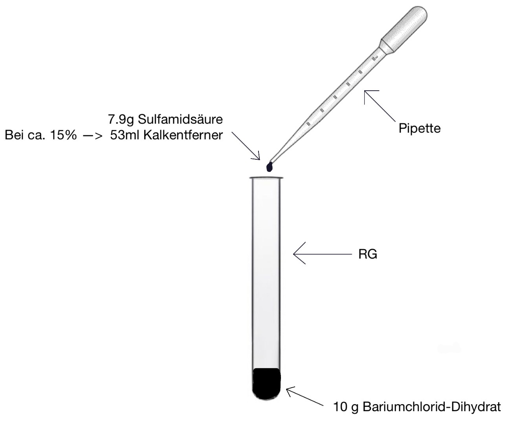

Sulfamidsäure
Ein detaillierter Steckbrief und Versuchsprotokoll
Steckbrief
1. Chemische Zusammensetzung
- Summenformel: H3NSO3
- Struktur: Die Säure liegt im Festzustand als Zwitterion (Molekül mit getrennten Ladungen, nach außen neutral) vor. Das erklärt, warum sie bei Raumtemperatur ein Feststoff ist.
- Molmasse: ca. 97,09 g/mol.
2. Vorkommen
- Natürliches Vorkommen: Kommt in der Natur nicht vor.
- Stabilität: Aufgrund ihrer hohen Reaktivität mit Mineralien (wie Kalkstein) würde sie in der freien Natur sofort verschwinden.
3. Herstellung / Gewinnung
- Industrielles Verfahren: Reaktion von Harnstoff (NH2)2 CO mit rauchender Schwefelsäure (Oleum = H2SO4 + SO3).
- Prozess: Die Reaktion ist stark exotherm (setzt viel Hitze frei) und muss aktiv gekühlt werden, um Reaktion zu verhindern.
- Abfallprodukt: Dabei entweicht Kohlenstoffdioxid CO2.
4. Verwendung
- Entkalker: Hauptbestandteil in Kalkentfernern, da sie Kalk sehr effektiv löst, aber Metalle weniger stark angreift als z.B. Salzsäure.
- Lebensmittel: Ausgangsstoff für die Herstellung von Süßstoffen (z. B. Acesulfam-K oder Cyclamat).
5. Chemische Reaktionen
Reaktion mit Kalk (Calciumcarbonat):
CaCO3 + 2 H2NSO3H —> Ca(H2NSO3)2 + H2O + CO2
Dabei entsteht Calcium-Amidosulfonat, Wasser und gasförmiges CO2.
Reaktion mit Wasser: In wässriger Lösung wandelt sie sich bei Erhitzen langsam in Ammoniumhydrogensulfat um.
6. Besonderheiten / Interessantes
- Aggregatzustand: Eine der wenigen anorganischen Säuren, die als Pulver gelagert werden können, was den Transport und die Mengen (z. B. in Portionen für Maschinen wie z.B. Kaffeemaschinen) vereinfacht.
- Hautkontakt: Trotz ihrer Stärke ist sie bei Hautkontakt weniger aggressiv als andere Säuren, sollte aber trotzdem nur mit Handschuhen benutzt werden.
Protokoll
1. Info (Versuchsziel)
Untersuchung der Reaktion von Sulfamidsäure mit Calciumcarbonat (Kalk). Es soll experimentell nachgewiesen werden, wie die Säure als Entkalker wirkt und welche Reaktionsprodukte dabei entstehen.
2. Materialien & Chemikalien
- Geräte: Reagenzglas, Reagenzglasständer, Spatellöffel, Becherglas (50 ml).
- Chemikalien: Sulfamidsäure (als Pulver), Wasser (H2O), Kalkstück (z. B. Kreide oder Muschelschale).
3. Skizze

4. Durchführung
- Ein Stück Kalk wird in das Reagenzglas gelegt.
- Im Becherglas wird eine Spatenspitze Sulfamidsäure in ca. 20 ml Wasser gelöst, bis eine klare Lösung entsteht.
- Die hergestellte Säurelösung wird langsam in das Reagenzglas über den Kalk gegossen.
5. Beobachtung
- Sofort nach dem Kontakt beginnt die Flüssigkeit am Kalkstück stark zu sprudeln (Gasentwicklung).
- Das Kalkstück wird im Verlauf der Reaktion kleiner und verschwindet schließlich ganz.
- Die Lösung bleibt während und nach der Reaktion klar.
- Das Reagenzglas erwärmt sich leicht.
6. Auswertung
Die Sulfamidsäure reagiert mit dem wasserunlöslichen Calciumcarbonat (Kalk). Dabei findet eine chemische Reaktion statt, bei der die Feststoffe in wasserlösliche Bestandteile umgewandelt werden. Das Sprudeln zeigt die Entstehung eines Gases an.
Wortgleichung:
Calciumcarbonat + Sulfamidsäure —> Calcium-Amidosulfonat + Wasser + Kohlenstoffdioxid
Reaktionsgleichung:
CaCO3 + 2 H2NSO3H —> Ca(H2NSO3)2 + H2O + CO2
Mengen-Rechner
Ergebnis ausstehend
Ergebnis ausstehend